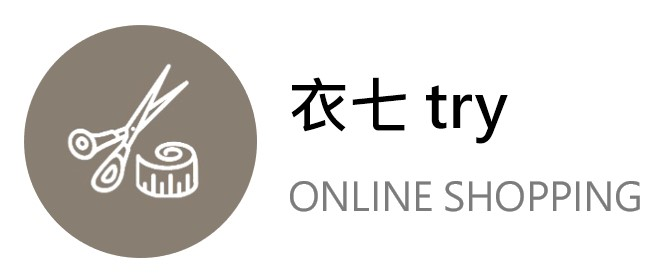

<script src="//code.jquery.com/jquery-1.11.1.min.js"></script>
<link href="//maxcdn.bootstrapcdn.com/bootstrap/3.3.0/css/bootstrap.min.css" rel="stylesheet" id="bootstrap-css">
<script src="//maxcdn.bootstrapcdn.com/bootstrap/3.3.0/js/bootstrap.min.js"></script>
<!DOCTYPE html>
<html>

<head>
	<meta charset="utf-8">
	<meta name="viewport" content="width=device-width, initial-scale=1, shrink-to-fit=no">
	<meta name="description" content="">
	<meta name="author" content="">
	<link href="https://fonts.googleapis.com/css?family=Poppins:100,200,300,400,500,600,700,800,900&display=swap"
		rel="stylesheet">

	<title>e7try商城</title>
	<link rel="stylesheet" type="text/css" href="assets/css/bootstrap.min.css">
	<link rel="stylesheet" type="text/css" href="assets/css/font-awesome.css">
	<link rel="stylesheet" href="assets/css/templatemo-hexashop.css">
	<link rel="stylesheet" href="assets/css/owl-carousel.css">
	<link rel="stylesheet" href="assets/css/lightbox.css">
</head>


<meta charset="utf-8">
<link href="assets/css/sign.css" rel="stylesheet">
<link href="assets/css/sign.css" rel="stylesheet">
<script type="module" src="./assets/js/view/sign.js"></script>

<header class="header-area header-sticky">
	<div class="container">
		<div class="row">
			<div class="col-12">
				<nav class="main-nav">
					<a href="shop.html" class="logo">
						
					</a>
					<ul class="nav">
						<li class="scroll-to-section"><a href="shop.html">首頁</a></li>
						<li class="submenu">
							<a href="javascript:;">商品</a>
							<ul>
								<li><a href="products.html">男裝</a></li>
								<li><a href="products.html">女裝</a></li>
								<li><a href="products.html">童裝</a></li>
								<li><a href="products.html">配件</a></li>
								<li><a href="products.html">全部商品</a></li>
							</ul>
						</li>
						<li class="submenu">
							<a href="javascript:;">會員中心</a>
							<ul>
								<li><a href="select.html">會員資料</a></li>
								<li><a href="contact.html">聯絡我們</a></li>
							</ul>
						</li>
						<li class="scroll-to-section"><a href="sign.html">簽到表</a></li>
						<li class="scroll-to-section"><a href="#top">購物車</a></li>
						<li class="scroll-to-section"><a href="index.html">登出</a></li>
					</ul>
					<a class='menu-trigger'>
						<span>Menu</span>
					</a>
				</nav>
			</div>
		</div>
	</div>
</header>

<br>
<br>
<br>

<script>
	$(document).ready(function () {
		var date = new Date();
		var d = date.getDate();
		var m = date.getMonth();
		var y = date.getFullYear();

		$('#external-events div.external-event').each(function () {

			// create an Event Object (http://arshaw.com/fullcalendar/docs/event_data/Event_Object/)
			// it doesn't need to have a start or end
			var eventObject = {
				title: $.trim($(this).text()) // use the element's text as the event title
			};

			// store the Event Object in the DOM element so we can get to it later
			$(this).data('eventObject', eventObject);

			//make the event draggable using jQuery UI
			$(this).draggable({
				zIndex: 999,
				revert: true,      // will cause the event to go back to its
				revertDuration: 0 //  original position after the drag
			});

		});
		var savedEvents = JSON.parse(localStorage.getItem('signform')) || [];
		var modifiedEvents = savedEvents.map(function (event) {
			return {
				mId: event.mId,
				start: new Date(event.stime),
				point: event.point,
				title: event.title
			};
		});
		console.log(savedEvents);
		//fullCalendar API (https://www.twblogs.net/a/5b802adc2b71772165a62dab)
		var calendar = $('#calendar').fullCalendar({
			header: {
				left: 'title',
				center: 'month',
				right: 'prev,next today,sign'
			},
			editable: true, //是否可編輯，即進行可拖動和縮放操作。
			firstDay: 1, //  1(Monday) this can be changed to 0(Sunday) for the USA system
			selectable: true, //是否允許用戶通過單擊或拖動選擇日曆中的對象，包括天和時間。
			defaultView: 'month', //日曆初始化時默認視圖

			axisFormat: 'h:mm', //設置日曆agenda視圖下左側的時間顯示格式，默認顯示如：5:30pm
			//設置顯示日曆每列表頭信息的格式文本
			columnFormat: {
				month: 'ddd',    // Mon
				week: 'ddd d', // Mon 7
				day: 'dddd M/d',  // Monday 9/7
				agendaDay: 'dddd d'
			},
			//設置用於顯示日曆頭部的文本信息
			titleFormat: {
				month: 'MMMM yyyy', // September 2009
				week: "MMMM yyyy", // September 2009
				day: 'MMMM yyyy'                  // Tuesday, Sep 8, 2009
			},
			// 在agenda視圖模式下，是否在日曆上方顯示all-day(全天)
			allDaySlot: false,
			selectHelper: true, //當點擊或拖動選擇時間時，顯示默認加載的提示信息，該屬性只在周/天視圖裏可用。
			// callback，被選中的函數回調，使用方法：
			// function( startDate, endDate, allDay, jsEvent, view )
			//startDate：被選中區域的開始時間 endDate：被選中區域的結束時間 allDay：是否爲全天事件 startDate：jascript對象 startDate：當前視圖對象  

			select: function (start, end, allDay) {
				var check = $.fullCalendar.formatDate(start, 'yyyy-MM-dd');
				var today = $.fullCalendar.formatDate(new Date(), 'yyyy-MM-dd');
				if (check === today) {
					var title = "已簽到";
					//prompt('Event Title:');
					if (title) {
						var existE = calendar.fullCalendar('clientEvents', function (event) {
							return (event.start >= start ? event.start >= start : null)
						})
						console.log(existE);
						if (existE.length == 0) {
							var now = new Date();
							var formattedDate = now.toLocaleDateString();
							console.log(formattedDate);

							const signData = {
								"mId": "1",
								"stime": formattedDate,
								"point": "0",
								'title': "已簽到"
							}
							modifiedEvents.push(
								 {
									"mId": signData.mId,
									"start": signData.stime, // 保留原始屬性名稱
									"point": signData.point,
									"title": signData.title
								})
							localStorage.setItem("signform", JSON.stringify([...savedEvents, signData]));
							$('#calendar').fullCalendar('refetchEvents');
							// $.ajax({
							// 	url: "insertsign.php",
							// 	type: "POST",
							// 	data: { title: title, start: start, },
							// 	success: function () {
							// 		calendar.fullCalendar('refetchEvents');
							// 		// alert('Event Update');
							// 	}
							// })
						}

					}
					calendar.fullCalendar('unselect');
				}
			},
			droppable: true, // this allows things to be dropped onto the calendar !!! 同意把事件放到日曆上
			drop: function (date, allDay) { // this function is called when something is dropped

				// retrieve the dropped element's stored Event Object 檢索被刪除元素的存儲事件對象
				var originalEventObject = $(this).data('eventObject');

				// we need to copy it, so that multiple events don't have a reference to the same object
				// 我們需要復制它，這樣多個事件就不會引用同一個對象
				var copiedEventObject = $.extend({}, originalEventObject);

				// assign it the date that was reported 為其分配報告的日期
				copiedEventObject.start = date;
				copiedEventObject.allDay = allDay;

				// render the event on the calendar 在日曆上呈現事件
				// the last `true` argument determines if the event "sticks" (http://arshaw.com/fullcalendar/docs/event_rendering/renderEvent/)
				$('#calendar').fullCalendar('renderEvent', copiedEventObject, true);

				// is the "remove after drop" checkbox checked? 是否選中了“刪除後刪除”複選框？
				if ($('#drop-remove').is(':checked')) {
					// if so, remove the element from the "Draggable Events" list 如果是，則從“可拖動事件”列表中刪除該元素
					$(this).remove();
				}
			},
			events: modifiedEvents,
		});
	});

</script>
<style>
	body {
		margin-bottom: 40px;
		margin-top: 40px;
		text-align: center;
		font-size: 14px;
		font-family: 'Roboto', sans-serif;
		background: url(http://www.digiphotohub.com/wp-content/uploads/2015/09/bigstock-Abstract-Blurred-Background-Of-92820527.jpg);
	}

	#wrap {
		width: 1100px;
		margin: 0 auto;
	}

	#external-events {
		float: left;
		width: 150px;
		padding: 0 10px;
		text-align: left;
	}

	#external-events h4 {
		font-size: 16px;
		margin-top: 0;
		padding-top: 1em;
	}

	.external-event {
		/* try to mimick the look of a real event */
		margin: 10px 0;
		padding: 2px 4px;
		background: #3366CC;
		color: #fff;
		font-size: .85em;
		cursor: pointer;
	}

	#external-events p {
		margin: 1.5em 0;
		font-size: 11px;
		color: #666;
	}

	#external-events p input {
		margin: 0;
		vertical-align: middle;
	}

	p #calendar {
		/* 		float: right; */
		margin: 0 auto;
		width: 900px;
		background-color: #FFFFFF;
		border-radius: 6px;
		box-shadow: 0 1px 2px #C3C3C3;
		-webkit-box-shadow: 0px 0px 21px 2px rgba(0, 0, 0, 0.18);
		-moz-box-shadow: 0px 0px 21px 2px rgba(0, 0, 0, 0.18);
		box-shadow: 0px 0px 21px 2px rgba(0, 0, 0, 0.18);
	}
</style>

<body>
	<div id='wrap'>
		<div id='calendar'></div>
		<div style='clear:both'>
		</div>
	</div>
</body>

</html>